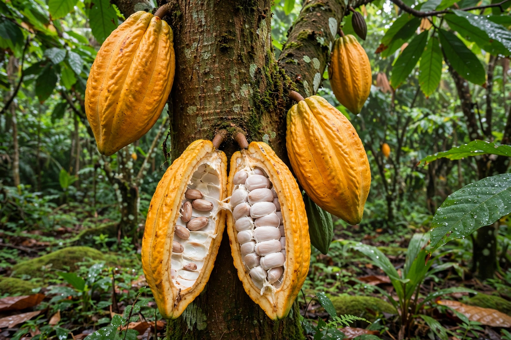

| Theobroma cacao | |
 | |
| Kingdom | Plantae |
|---|---|
| Order | Malvales |
| Family | Malvaceae |
| Genus | Theobroma |
| Species | T. cacao L. |
| Products | Cocoa beans, cocoa butter, chocolate |
Theobroma cacao (cacao) is a small evergreen tree in the family Malvaceae. Its seeds, cocoa beans, are used to make chocolate liquor, cocoa solids, cocoa butter, and chocolate. The tree is native to the deep tropical regions of the Americas — the upper Amazon and Orinoco basins — and was domesticated in Mesoamerica, where its beans were prized as the base of the bitter drink xocolātl and even used as currency. Carl Linnaeus gave the genus the name Theobroma, "food of the gods," from Greek theos (god) and broma (food).
The cacao tree grows 4–8 m tall (occasionally taller in the wild) and bears leaves that are alternate, glossy, and oblong. It is cauliflorous: its small pinkish-white flowers and then its fruit grow directly from the trunk and older branches. The fruit, a cacao pod, is an ovoid berry 15–30 cm long that ripens yellow to orange-red; inside, 20–60 seeds ("beans") are embedded in a sweet, white, mucilaginous pulp. Each bean contains a significant amount of fat (40–50%) as cocoa butter, plus theobromine and smaller amounts of caffeine. Pollination depends largely on tiny ceratopogonid midges.
Evidence from Ecuador (Santa Ana-La Florida, ~5,300 years ago) suggests cacao was used in South America before its famous Mesoamerican career. The Olmec, Maya, and Aztec cultivated cacao; the Maya drank a frothy, spiced cacao beverage, and the Aztec reserved it largely for elites and warriors, valuing the beans as tribute and small currency. After the Spanish conquest, cacao was carried to Europe, where sweetened, hot chocolate became a fashionable drink, and then around the world: to the Caribbean, West Africa (via Fernando Po and the Gold Coast), and Southeast Asia. Plantation production in the nineteenth and twentieth centuries shifted the centre of cultivation to West Africa.
Traditionally, cacao is grouped into three broad types: Criollo, the rare, fine-flavour cacao of Central America and northern South America; Forastero, the hardy, high-yielding Amazonian type that supplies the great majority of world cocoa; and Trinitario, a hybrid population arising in Trinidad, combining Criollo flavour with Forastero vigour. Modern genetic studies divide cacao into about ten clusters (including Amelonado, Nacional, Contamana, and others) reflecting its Amazonian diversity.
Cacao grows only in the humid tropics within about 20° of the equator, needing shade when young, high rainfall, and rich soil. Harvesting is manual: ripe pods are cut, split open, and the beans fermented for several days — developing chocolate flavour precursors — then dried. World production is around five million tonnes of beans a year. The leading producers are Côte d'Ivoire (the world's largest, at roughly two-fifths of supply) and Ghana, followed by Indonesia, Nigeria, Cameroon, Brazil, and Ecuador. Serious threats include fungal diseases (witches' broom, frosty pod rot, black pod), the viral cacao swollen shoot disease in West Africa, low farmgate prices, deforestation concerns, and child-labour controversies that have driven certification schemes (Fairtrade, Rainforest Alliance) and sustainability programs.
See also: Chocolate, Cocoa bean, Commodity market, Côte d'Ivoire